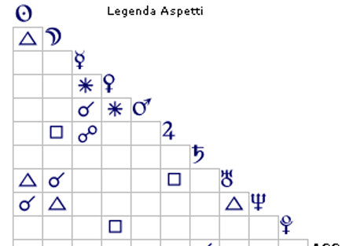

Il cielo racconta
Tiziano Terzani
Firenze, 14 settembre 1938
Tiziano Terzani nato a Firenze il 14/09/1938 alle ore 19:15
Vergine Ascendente Ariete


Tiziano Terzani: l'Uomo che ha Viaggiato nel Mondo per Trovare l'Anima
Tiziano Terzani è stato uno dei più grandi giornalisti e scrittori del Novecento. Ha raccontato le guerre, le rivoluzioni e la magia dell'Asia, per poi ritirarsi in isolamento spirituale sull'Himalaya. Una vita straordinaria, quasi leggendaria. Ma se apriamo la sua mappa astrale, scopriamo qualcosa di sconvolgente: ogni sua ferita, la sua rabbia e la sua illuminazione finale erano già stampate nel cielo.
Ecco le prove incredibili che l'astrologia funziona davvero.
1. La povertà e il riscatto scritti nel cielo
Terzani nacque in una famiglia fiorentina poverissima. Nei momenti bui, la madre doveva impegnare le lenzuoli al Monte di Pietà per comprare da mangiare.
Nel suo tema natale, Giove (il denaro) è letteralmente bombardato di aspetti negativi, in particolare da un aspetto di quadratura con la Luna in Toro in Seconda Casa (settore e segno del denaro e dei bisogni materiali).
Quella fame d'infanzia e l'ansia per i soldi non sono state un caso: erano scritte nella sua mappa astrale.
2. Il giornalismo come un'arma da guerra
A un certo punto della sua vita, Terzani capisce che il giornalismo non è solo scrivere articoli, ma un'arma per difendere gli ultimi e combattere le ingiustizie dei potenti.
Il segreto stupefacente: Nel suo tema c'è una congiunzione esplosiva: Mercurio (la scrittura e la comunicazione) è abbracciato a Marte (il Dio della guerra).
E dove si trova questa coppia d'assalto? Nella Sesta Casa, che in astrologia rappresenta proprio gli operai, i deboli, la massa che subisce. Le sue parole dovevano diventare armi per difendere gli indifesi.
3. L'irrequietezza perenne: il "risucchio" dei Pesci
Perché Terzani non è mai riuscito a stare fermo in un ufficio, arrivando a licenziarsi da un posto sicuro alla Olivetti per girare il mondo senza certezze?
Nel suo tema c'è un'energia Vergine fortissima (ha ben quattro pianeti in questo segno, legati alla logica e al dovere).
Il colpo di scena: In astrologia, quando un segno è troppo potente, scatta l'effetto "risucchio" del suo opposto. Terzani è stato letteralmente calamitato dal segno dei Pesci: la fuga, il sogno, l'attrazione per l'ignoto e il rifiuto delle regole. Il Sole congiunto a Nettuno ha fatto il resto, rendendolo un eterno nomade dell'anima.
4. Il cancro e la profezia finale dell'Himalaya
La svolta finale arriva con la malattia: un tumore all'intestino. Per Terzani la cura diventa un viaggio spirituale che lo porterà a lasciare tutto e a ritirarsi in una capanna in Asia, trovando una pace immensa prima di morire.
La precisione da brividi: La malattia colpisce la carne (energia Vergine e Sesta Casa), ma lo costringe a cedere definitivamente al "risucchio" dei Pesci: l'invisibile, lo spirito, la meditazione.
Quel Giove molto leso, che da bambino lo aveva fatto soffrire per la povertà, alla fine della vita si trasforma nel suo dono più grande: il desiderio assoluto di liberarsi di ogni bene materiale per diventare puro spirito.
Il verdetto delle stelle
Il viaggio di Terzani è cominciato nella materia più dura — un bambino povero che guardava gli altri mangiare il gelato — ed è finito tra le vette dello spirito. L'astrologia non ha solo descritto la sua vita: ha tracciato la mappa esatta della sua illuminazione.
Incredibile come la sofferenza di un bambino possa trasformarsi nella saggezza di un grande saggio, seguendo esattamente le linee guida dei pianeti.